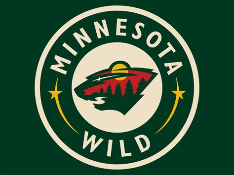

About the Minnesota Wild
The Minnesota Wild is a professional ice hockey team based in Saint Paul, Minnesota. Founded in 2000, they have built a passionate fan base and continue to be a strong competitor in the NHL.
Their logo, designed by graphic artist Stephen O'Laughlin, features a stylized bear's head incorporating elements of Minnesota's wilderness, such as trees, a river, and a star representing the North Star.
Notable Players
- Mikko Koivu: The team's first permanent captain, serving from 2009 to 2020.
- Marian Gaborik: The franchise's first draft pick and leading scorer in early seasons.
- Ryan Suter: A stalwart defenseman known for his consistency and leadership.
2024-2025 Roster Favorite Players
| Number | Name | Position | Age | Height | Weight |
|---|---|---|---|---|---|
| 14 | Joel Eriksson Ek | Center | 28 | 6'3" | 207 lbs |
| 36 | Mats Zuccarello | Right Wing | 37 | 5'8" | 181 lbs |
| 25 | Jonas Brodin | Defense | 31 | 6'2" | 196 lbs |
| 29 | Marc-André Fleury | Goalie | 40 | 6'2" | 185 lbs |
| 32 | Filip Gustavsson | Goalie | 26 | 6'2" | 184 lbs |
| 12 | Matt Boldy | Left Wing | 23 | 6'2" | 201 lbs |
| 97 | Kirill Kaprizov | Left Wing | 27 | 5'10" | 202 lbs |